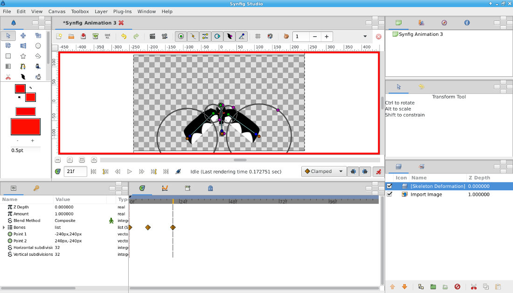

A Skeleton Deformation Layer permite deformar uma imagem raster através de "bones". Imagine que tem imagens raster/bitmap (.jpg, .png) criadas noutra aplicação (por exemplo, GIMP) e que pretende importar e animar as mesmas no Synfig...
Neste exercício, iremos utilizar a imagem disponível aqui.
1. Importe a imagem que irá ser deformada. Comece por criar uma layer do tipo Import Image, depois selecione a imagem a importar através do parâmetro Filename.
2. Adicione uma Skeleton Deformation Layer.
3. Desative a funcionalidade de deformação para poder editar a posição dos "bones"/armadura sem problemas.
4. Configure a armadura a seu gosto.
Crie Child Bones (clique com botão direito do rato em cima do bone e escolha Create Child Bone). No exemplo, existem dois Child Bones nas asas. Mova o ponto verde de cada bone para o local onde vai existir a rotação e utilize o ponto castanho para definir o comprimento de cada bone.
Defina o raio de influência de cada bone através dos pontos rosa. O círculo representa a área de influência de cada uma das extremidades do bone.
5. Depois de ter criado a sua armadura, faça Reset the Pose (botão direito do rato em cima da Skeleton Deformation Layer) e volte a ativar a funcionalidade de deformação.
6. Anime os bones para conseguir animar a deformação da imagem importada.
